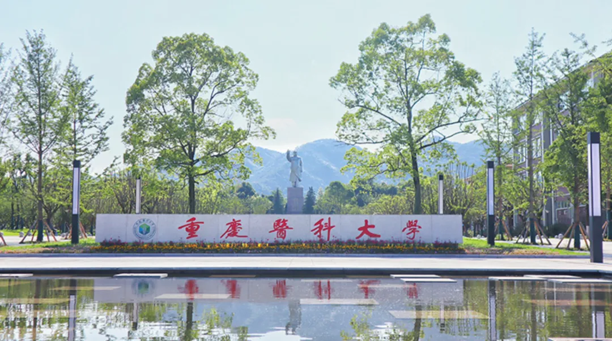

重庆医科大学生物信息学方向科研助理招聘
原文：https://mp.weixin.qq.com/s?__biz=MzAwMzIzOTk5OQ==&mid=2247532147&idx=2&sn=7031b57d641d549c9baf0966bd41754b&chksm=9b3c0723ac4b8e3597d33edb7a5b832aa994f93731f5d7a291fea4c803308935897e67af8321#rd 合集：求职/求学/招聘
01
写在前面
我们长期发布招聘/求职板块(甚至我给自己都发了求职：Biomamba求职| 国奖+4篇一作SCI)，欢迎各位老师/老板欢迎联系~我们也在招贤纳士Biomamba生信基地秋季招聘开启！其它需要求职的小伙伴也欢迎把简历发给我们[Biomamba_zhushou]，大家一起找工作/学习。用人单位也可以联系我们免费刊登招聘信息~
02
ABOUT US

课题组负责人为国家 “博新计划”获得者，在相关领域以第一作者身份发表多篇正刊论文。课题组现因科研方向拓展与课题增加，诚聘科研助理。
03
JOIN US
科研助理 1名（生物信息学方向）。
** **
一、岗位职责
- 主导或协助课题组生物信息学相关课题的研究与分析；
- 负责多组学数据（如基因组、转录组等）的挖掘、处理与解读；
- 开发或应用生物信息学算法及工具；
- 协助课题组其他成员进行数据分析与科研工作；
- 参与学术论文与专利的撰写。
二、岗位要求
- 具有硕士学位的应届或往届毕业生；
- 拥有生物信息学、计算生物学、计算机科学、临床医学或相关学科背景；
- 具备良好的数据分析和编程能力，熟悉Linux环境及至少一门编程语言（如R/Python/Perl等）；
- 以第一作者（或共同一作）发表过SCI论文者优先；
- 积极向上，执行力强，具备独立开展科研任务的能力；
- 具有良好的沟通能力和团队协作精神。
三、待遇
- 薪资待遇按照重庆医科大学科研助理标准执行；
- 表现优异者，可在1–2年后获得推荐继续攻读博士学位的机会。
联系方式
 工作地址重庆医科大学袁家岗校区（重庆市渝中区医学院路1号）报名1.报名方式：邮箱报名。2.请将个人简历发送至： 黄老师邮箱huangyinde@cqu.edu.cn 联系方式：15223052906
工作地址重庆医科大学袁家岗校区（重庆市渝中区医学院路1号）报名1.报名方式：邮箱报名。2.请将个人简历发送至： 黄老师邮箱huangyinde@cqu.edu.cn 联系方式：15223052906